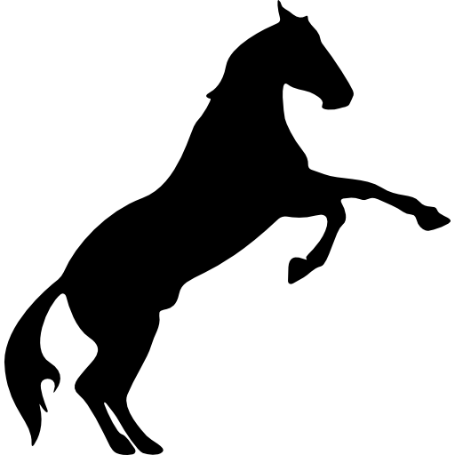

Что же удалось узнать о лошадях

1
Во-первых, оказалось. что все современные домашние лошади произошли от одной группы одомашненных лошадей, т.е. находятся в близком родстве друг с другом.

2
Во-вторых. в близком родстве с современными домашними лошадьми оказались древние домашние лошади, вымершие примерно 4200 лет назад, а также дикие лошади из Западной Евразии.

3
В-третьих, прояснилось положение лошадей из поселения Ботай*, которые до сих пор считались самыми древними представителями домашних лошадей в мире.
Происхождение современных лошадей